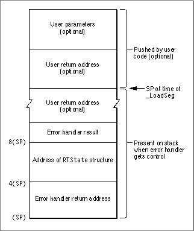

Legacy Document
Important: The information in this document is obsolete and should not be used for new development.
Important: The information in this document is obsolete and should not be used for new development.


Segment Manager Hooks
SeveralRuntimeoperations allow the application to take control and execute a user-defined handler routine during the segment loading or unloading process. These operations are
In each of these cases, control is passed by replacing the null user vector (set up by the patched Segment Manager) with a user handler.
kRTSetPreLoadandkRTSetPreLoadA5, which pass control to the handler before loading a segmentkRTSetSegLoadErrandkRTSetSegLoadErrA5, which pass control to the handler if the segment load failskRTSetPostLoadandkRTSetPostLoadA5, which pass control to the handler after loading a segmentkRTSetPreUnloadandkRTSetPreUnloadA5, which pass control to the handler before calling_UnloadSeg
The
fRTParamsstructure used with these operations is as follows:
struct RTSetSegLoadParam { SegLoadHdlrPtr fUserHdlr; SegLoadHdlrPtr fOldUserHdlr; }; typedef struct RTSetSegLoadParam RTSetSegLoadParam;The pointerfUserHdlrpoints to the user handler to be called at the time indicated by the operation. A pointer to the original (bypassed) handler is returned infOldUserHdlr.User Handlers
A user handler is defined as follows:
typedef pascal short (*SegLoadHdlrPtr)(RTState* state)The handler may return a result code of typeshort. This code is ignored by the Segment Manager except in the case of the error handler. See "Error Handling With kRTSetSegLoadErr" (page B-7) for more details.
Information about the Segment Manager operation is passed to the user handler through the
- WARNING
- User handlers must be defined within the segment to be loaded into memory when the handler is invoked (usually the main segment). Also, the user handler must not call any routines in unloaded segments as this may result in a system crash.

RTStatestructure. This structure has the following form:
struct RTState { unsigned short fVersion;/* runtime version */ void* fSP; /* SP: address of user return address */ void* fJTAddr; /* PC: address of jump table entry */ /* or (see fCallType) */ /* address of a transition vector*/ long fRegisters[15];/* registers D0-D7 and A0-A6 */ short fSegNo; /* segment number */ ResType fSegType; /* segment type (normally 'CODE') */ long fSegSize; /* segment size */ Boolean fSegInCore;/* true if segment is in memory */ Boolean fCallType; /* 0 = _LoadSeg, */ /* 1 = fJTAddr, address of TVector */ OSErr fOSErr; /* error number */ long fReserved2;/* (reserved for future use) */ }; typedef struct RTState RTState;The fields in the structure are as follows:
All attempts to modify the
fVersionis the version number from the A5 or fA5 runtime world.fSPhas the value of the stack pointer when either_LoadSegor_UnloadSegwas executed.
- In the case of
_LoadSeg, if the jump table entry was reached using aJSRinstruction,fSPis a pointer to the user return address. You can modify the stack pointer value within an error handler to change the return address if you want to continue execution after trapping an error. See "Error Handling With kRTSetSegLoadErr" (page B-7) for more information. However, this is not recommended since there may not be a user return address on the stack.- In the case of
_UnloadSeg,fSPpoints to the return adress from the_UnloadSegcall.
fJTAddrpoints to either a jump table entry or a transition vector depending on the runtime environment and the value offCallType:
- In a
_LoadSegcall (fCallTypeis0),fJTAddrpoints to the jump table entry called by the user code prior to the_LoadSegcall. You can modify the value offJTAddrwithin an error handler if you want to retry the segment load procedure.- In an
_UnloadSegcall,fJTAddrpoints to the function address passed to_UnloadSeg.- In the CFM-68K runtime environment, the
fJTAddrfield is always the address of a transition vector. You cannot modify this field whenfCallTypeis1.Note that you should not make any assumptions about the layout of the jump table entry since it varies between the far model and CFM-68K runtme environments and may change in the future.
fRegistersis an array of long integers that contains the register values at the time_LoadSegwas called. The registers are saved in the order D0 through D7, then A0 through A6.fSegTypeandfSegNocontain the segment's resource type and ID.fSegTypeis usually'CODE'but this may change in the future.fSegSizecontains the size of the segment, in bytes.fSegInCoreindicates whether the segment is in memory. IffSegInCoreistrue, the segment is already in the heap but has not been locked. (If the segment is resident, no memory needs to be allocated for it.)- The
fCallTypefield is used by other fields whose meanings are dependent on how the segment load was invoked. IffCallTypeis1, the segment load was invoked through a function call by a pointer (or by a virtual method dispatch in C++).fOSErrcontains an error number. This field is valid only when this structure is passed to an error handler.
RTStatestructure are ignored except for alterations offJTAddrby the user error handler.Error Handling With kRTSetSegLoadErr
WhenkRTSetSegLoadErrinvokes the user error handler (that is, when a segment loading error occurs), the stack has the form shown in Figure B-1.Figure B-1 The stack when a user error handler is called

The error handler should use the information at the following locations:
Items on the stack labeled as optional may not actually appear. For example, a simple
- The word at
8(SP)is reserved for the error handler's action code (as described later in this section).- The value at
4(SP)points to theRTStatestructure, which contains information about the error.- The value at
(SP)is the return address from the error handler. This value may or may not be used depending on how the routine handles the error.
JMPinstruction would not push user parameters or a return address onto the stack.The error handler should examine the
RTStatestructure and then take appropriate action (for example, release some memory). After doing so, the handler can do one of the following:
- Return an action code on the stack for the Segment Manager and then return. Current action codes are shown in Table B-3. Attempts to pass any other value to the Segment Manager results in the system error
daLoadErr.- use a
LONGJMP(or the equivalent) instruction to pass control to another error handler set up in a parent stack frame. This second handler could save the current document, alert the end user, and quit the application.